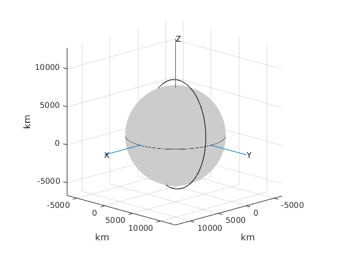

Contents
clear all; clc;
inputs
global mu
file='ri1.mat';
k=100; q=400;
load(file)
T=0;
deg = pi/180;
mu = 398600;
Azimuth and elevation rates
j=size(A);
for i=1:j-1
Adot(i,1)=A(i+1)-A(i);
adot(i,1)=a(i+1)-a(i);
end
Time, month, date, true anomaly
ut=hh+mm/60+ss/60/60+mss/1000/60/60;
for i=1:length(Year)
[m(i),d(i)] = md(Year(i),Day(i));
end
m=m';d=d';
theta=LST(Year, m, d, ut,EL);
Lambert's method
r1=r_from_observe(rho(k), A(k), a(k), theta(k), phi, H);
r2=r_from_observe(rho(q), A(q), a(q), theta(q), phi, H);
dt=3600*(ut(q)-ut(k));
string='pro';
[v1,v2] = lambert(r1, r2, dt, string);
coe = coe_from_sv(r1, v1, mu);
TA1 = coe(6);
if coe(7)<0
string='retro';
[v1,v2] = lambert(r1, r2, dt, string);
coe = coe_from_sv(r1, v1, mu);
end
coe = coe_from_sv(r2, v2, mu);
TA2 = coe(6);
Print outputs
fprintf('-----------------------------------------------------')
fprintf('\n\n Input data:\n');
fprintf('\n Gravitational parameter (km^3/s^2) = %g\n', mu);
fprintf('\n r1 (km) = [%g %g %g]', ...
r1(1), r1(2), r1(3))
fprintf('\n r2 (km) = [%g %g %g]', ...
r2(1), r2(2), r2(3))
fprintf('\n Elapsed time (s) = %g', dt);
fprintf('\n\n Lambert OD Solution:\n')
fprintf('\n v1 (km/s) = [%g %g %g]', ...
v1(1), v1(2), v1(3))
fprintf('\n v2 (km/s) = [%g %g %g]', ...
v2(1), v2(2), v2(3))
fprintf('\n\n Orbital elements:')
fprintf('\n Angular momentum (km^2/s) = %g', coe(1))
fprintf('\n Eccentricity = %g', coe(2))
fprintf('\n Inclination (deg) = %g', coe(4)/deg)
fprintf('\n Type of orbit Prograde / Retrograde = %c%c%c%c%c', string)
fprintf('\n RA of ascending node (deg) = %g', coe(3)/deg)
fprintf('\n Argument of perigee (deg) = %g', coe(5)/deg)
fprintf('\n True anomaly initial (deg) = %g', TA1/deg)
fprintf('\n True anomaly final (deg) = %g', TA2/deg)
fprintf('\n Semimajor axis (km) = %g', coe(7))
fprintf('\n Periapse radius (km) = %g', coe(1)^2/mu/(1 +coe(2)))
if coe(2)<1
T = 2*pi/sqrt(mu)*coe(7)^1.5;
fprintf('\n Period = %g minutes', T/60)
end
fprintf('\n-----------------------------------------------------\n')
-----------------------------------------------------
Input data:
Gravitational parameter (km^3/s^2) = 398600
r1 (km) = [-1521.79 -6699.06 512.96]
r2 (km) = [-1666.56 -6175.85 2716.1]
Elapsed time (s) = 300
Lambert OD Solution:
v1 (km/s) = [-0.769793 0.55031 7.57191]
v2 (km/s) = [-0.189136 2.89595 6.98548]
Orbital elements:
Angular momentum (km^2/s) = 52549.8
Eccentricity = 0.0268063
Inclination (deg) = 96.55
Type of orbit Prograde / Retrograde = retro
RA of ascending node (deg) = 257.693
Argument of perigee (deg) = 286.517
True anomaly initial (deg) = 189.435
True anomaly final (deg) = 96.6498
Semimajor axis (km) = 6932.92
Periapse radius (km) = 6747.08
Period = 95.7491 minutes
-----------------------------------------------------
Orbit Plot
m1 = 5.974e24 ;
R = 6378.178;
m2 = 1000;
t0 = 0;
tf = T/60;
orbit(m1,m2,R,r2,v2,t0,tf)
--------------------------------------------------------
Earth Orbit
20-Mar-2017 04:27:26
The initial position is [-1666.56, -6175.85, 2716.1] (km).
Magnitude = 6949.52 km
The initial velocity is [-0.189136, 2.89595, 6.98548] (km/s).
Magnitude = 7.56434 km/s
Initial time = 0 min.
Final time = 95.7491 min.
The minimum altitude is 366.66 km at time = 1.56135 h.
The speed at that point is 7.79106 km/s.
The maximum altitude is 738.701 km at time = 0.165841 h.
The speed at that point is 7.38382 km/s
--------------------------------------------------------
